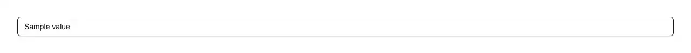

A URL slug field that fills itself in from a title and then gets out of the way. Use it wherever a record needs a URL: the permalink or slug field in a blog post editor or CMS admin form, a page or docs route segment, a product handle, a workspace or team URL, a category or tag slug, a public profile handle. Type a title, watch the slug appear as kebab-case, and edit it whenever you want — this is the part hand-rolled fields get wrong. It keeps deriving only while the field still holds exactly what it generated, so editing the slug by hand, or loading an existing slug from your database, stops the derivation for good: renaming a published post cannot silently change its URL. Leave the field empty and blur, and it goes back to following the title. Every keystroke is sanitised in place — lowercased, spaces and punctuation collapsed to a single hyphen (or underscore), accents folded away — while the caret stays exactly where you were typing, which is what breaks when you naively assign a transformed value back to a controlled input. Unicode is handled rather than mangled: NFKD folding turns "Café au lait" into cafe-au-lait, "Łódź" into lodz, and the letters decomposition leaves whole are spelled out ("Straße" becomes strasse, not strae). Pass allowUnicode to keep the title's own script instead — without it a Japanese, Chinese, Korean, Greek, Cyrillic, Hebrew or Arabic title slugifies to an empty string, and with it combining marks stay attached to their letter, so がっこう does not quietly become かっこう. maxLength cuts a generated slug back to a whole word rather than mid-syllable, apostrophes disappear instead of splitting words ("don't panic" becomes dont-panic), and pasting a full URL takes just its last path segment. Zero dependencies, one import, shadcn tokens, optional prefix like example.com/blog/ wired to the input with aria-describedby. Official shadcn/ui has no slug or permalink field — its input is a bare element and input-group is an assembly kit with no logic in it — and a slugify npm package solves the string, not the field: the caret, the do-not-stomp rule and the typing-in-progress state are what this component is.

Rendered on the shadcn default neutral palette with harness-generated props.
pnpm dlx shadcn@4.21.0 add @pulld/slug-input
| licence | POINTER |
|---|---|
| primitive base | none |
| type | registry:ui |
| files | src/components/ui/slug-input.tsx |
| npm deps pulled | none beyond the pre-installed peer set |
| registry deps | — |
| semantic / palette / hex | 4 / 0 / 0 |
| writes shared ui/ | yes — can overwrite the project’s own primitives |